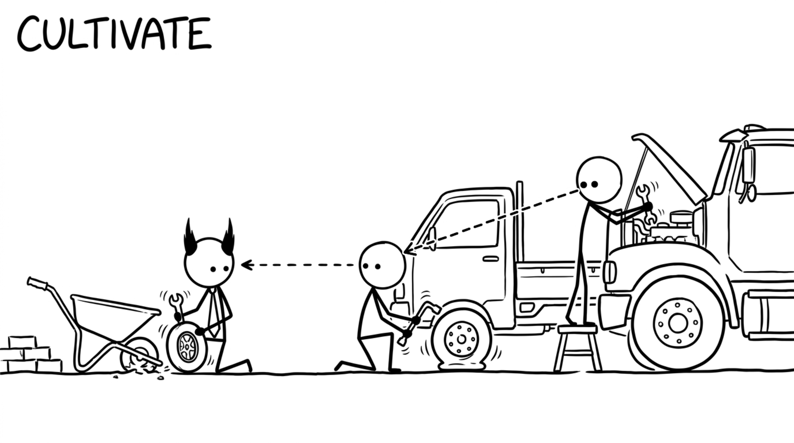

<section id="cap-cultivate" data-transition="fade" style="display:flex; align-items:center; justify-content:center; padding:0; background:#fcfcfa">

<p style="position:absolute;left:0;bottom:10px;width:1920px;margin:0;text-align:center;font-family:'Patrick Hand', 'Trebuchet MS', sans-serif;font-size:22px;color:#8a8f98">Copyright Dobromir Montauk 2026</p>
<aside><b>Cultivate.</b> Culture is what people copy. Your team copies what you do, not what you say, and the next hire copies them, long after they've stopped watching you.<br>- You break prod: you write the postmortem, and it starts with your own mistake. Six months later, a junior engineer opens theirs the same way.<br>- You fix the flaky test instead of hitting re-run. Your tech lead stops re-running, and so does the new hire.<br>- You review PRs within a day, with a real comment, not just LGTM. That becomes the team's review bar.<br>- You say "I don't know, let me find out" in a design review. People stop bluffing.<br>Then make it explicit: a few words people can act on, like "Rigorously Get Shit Done". Reward what you say you value; if you say quality but celebrate only speed, the team copies speed. Hire and fire by it.<br>It's slow to build and fast to lose.</aside>
</section>
